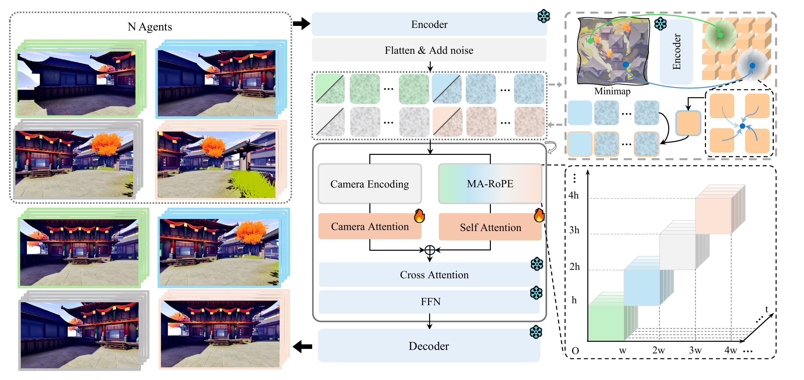

Joint Multi-Agent Tokens
Agent videos are packed into one full-attention generation process, so scene layout, objects, and motion can be resolved jointly across views.
Camera-controllable multi-agent world model
Camera-Controllable Multi-Agent Video Generation Model
Relative camera geometry encourages overlapping viewpoints to share evidence.
Prisma-World handles diverse UE scenes and open-domain multi-agent rollouts.
One model supports different numbers of agents at inference time.
Top-down structure provides local spatial priors for each agent.
We propose Prisma-World, a multi-agent world model with multi-agent RoPE and camera-aware cross-view consistency modeling. It is capable of synthesizing diverse and complex scenes while guaranteeing multi-view consistency and offering the flexibility to dynamically specify the number of generated agents, and can further use minimap guidance to improve spatial grounding.
Video world models have made rapid progress in generating controllable visual experiences, but most of them still simulate the world from a single observer. Extending such models to multiple agents raises a central challenge: if each agent's video is generated independently, overlapping views may instantiate different versions of the same scene, causing inconsistent objects, layouts, and appearances across agents. Conventional camera conditioning controls individual trajectories, but it does not explicitly couple the generation of views that should agree under shared scene geometry. We introduce Prisma-World, a camera-controllable multi-agent world model that formulates multi-agent generation as a joint geometry-aware denoising process for cross-view consistency. Prisma-World processes all agent videos within one full-attention sequence, uses a multi-agent RoPE design to distinguish agent identities while preserving synchronized temporal coordinates, and injects relative camera geometry into attention to bias overlapping viewpoints toward shared scene evidence. To further strengthen multi-view consistency and enhance global spatial perception, we augment our framework with a progressive simple-to-hard training paradigm alongside minimap-conditioned structural guidance. To facilitate the training and evaluation of multi-agent models, we introduce PrismaDataset, a large-scale UE5 dataset with panoramic acquisition across diverse scenes, composable multi-agent view groups with flexible agent counts and complex camera trajectories, and precise camera/action annotations for consistency training and evaluation. Experiments show that a single Prisma-World model can generate high-fidelity multi-agent videos with flexible agent numbers, camera controllability, improved cross-view consistency, and spatial grounding under minimap guidance.

Agent videos are packed into one full-attention generation process, so scene layout, objects, and motion can be resolved jointly across views.
Positional encoding distinguishes different agents while aligning frames at the same timestamp, enabling temporal correspondence across generated views.
Relative camera relations are injected into attention, encouraging views with nearby poses to attend more strongly and produce consistent visual content.
A local top-down map provides spatial structure for each agent, guiding generation toward layouts and trajectories that match the intended scene plan.
Browse results with the arrow controls or select a thumbnail. The placeholders are ready for 2-agent, 3-agent, and 4-agent demo videos.
Open-domain examples are also organized by agent number, making it easy to compare how the same model behaves under 2-agent, 3-agent, and 4-agent settings.
Action-conditioned rollouts with synchronized keyboard movement and mouse control visualization.
Minimap guidance provides each agent with a local top-down structural prior. The demo compares the same rollout before and after introducing the minimap condition.
@article{prismaworld2026,
title={Prisma-World: Camera-Controllable Multi-Agent Video Generation Model},
author={Anonymous Authors},
journal={arXiv preprint},
year={2026}
}